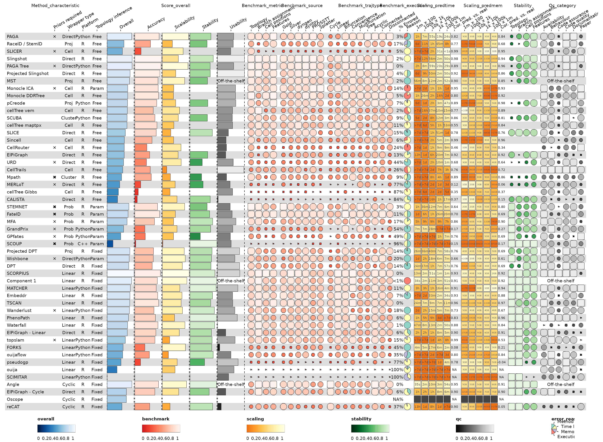

In this vignette, we will use funkyheatmap to reproduce
the figures by Saelens et al. (2019).
Load data
This data was generated by running the data-raw/dynbenchmark_data.R
script. It fetches the latest results from the dynbenchmark_results
repository and stores the data inside the funkyheatmap
package.
library(funkyheatmap)
library(kableExtra)
data("dynbenchmark_data")Process results
The results data is one big data frame.
data <- dynbenchmark_data$data
print(data[, 1:12])
#> # A tibble: 51 × 12
#> id method_name method_source tool_id method_platform method_url
#> <chr> <chr> <chr> <chr> <chr> <chr>
#> 1 paga PAGA tool paga Python https://g…
#> 2 raceid_stemid RaceID / S… tool raceid… R https://g…
#> 3 slicer SLICER tool slicer R https://g…
#> 4 slingshot Slingshot tool slings… R https://g…
#> 5 paga_tree PAGA Tree tool paga Python https://g…
#> 6 projected_sling… Projected … tool slings… R https://g…
#> 7 mst MST offtheshelf mst R NA
#> 8 monocle_ica Monocle ICA tool monocle R https://g…
#> 9 monocle_ddrtree Monocle DD… tool monocle R https://g…
#> 10 pcreode pCreode tool pcreode Python https://g…
#> # ℹ 41 more rows
#> # ℹ 6 more variables: method_license <chr>, method_authors <list>,
#> # method_description <chr>, wrapper_input_required <list>,
#> # wrapper_input_optional <list>, wrapper_type <chr>Choose a few columns to preview.
preview_cols <- c(
"id",
"method_source",
"method_platform",
"benchmark_overall_norm_correlation",
"benchmark_overall_norm_featureimp_wcor",
"benchmark_overall_norm_F1_branches",
"benchmark_overall_norm_him",
"benchmark_overall_overall"
)
kable(data[, preview_cols])| id | method_source | method_platform | benchmark_overall_norm_correlation | benchmark_overall_norm_featureimp_wcor | benchmark_overall_norm_F1_branches | benchmark_overall_norm_him | benchmark_overall_overall |
|---|---|---|---|---|---|---|---|
| paga | tool | Python | 0.6504941 | 0.7303490 | 0.6087144 | 0.5974547 | 0.6447229 |
| raceid_stemid | tool | R | 0.5393572 | 0.6255247 | 0.2683444 | 0.4539247 | 0.4502455 |
| slicer | tool | R | 0.1387779 | 0.1695031 | 0.2475509 | 0.5536164 | 0.2382829 |
| slingshot | tool | R | 0.7401781 | 0.7243311 | 0.6909130 | 0.6533370 | 0.7013883 |
| paga_tree | tool | Python | 0.6880083 | 0.7364518 | 0.6716161 | 0.6665846 | 0.6901263 |
| projected_slingshot | tool | R | 0.6551315 | 0.6788597 | 0.6828560 | 0.6357031 | 0.6628618 |
| mst | offtheshelf | R | 0.6098712 | 0.6640261 | 0.5768291 | 0.6288011 | 0.6190788 |
| monocle_ica | tool | R | 0.6290279 | 0.6657493 | 0.5967264 | 0.6048960 | 0.6235326 |
| monocle_ddrtree | tool | R | 0.7310423 | 0.7312963 | 0.4523655 | 0.6616356 | 0.6324644 |
| pcreode | tool | Python | 0.6462532 | 0.7170194 | 0.4573191 | 0.5739903 | 0.5905605 |
| celltree_vem | tool | R | 0.3680771 | 0.4788885 | 0.6841745 | 0.5753976 | 0.5132477 |
| scuba | tool | Python | 0.5446324 | 0.5305276 | 0.5814803 | 0.5435960 | 0.5497379 |
| celltree_maptpx | tool | R | 0.6111870 | 0.6242291 | 0.6331532 | 0.5258015 | 0.5969833 |
| slice | tool | R | 0.6222513 | 0.5796429 | 0.5970229 | 0.5240740 | 0.5795988 |
| sincell | tool | R | 0.5377153 | 0.5503793 | 0.3327244 | 0.5634739 | 0.4853368 |
| cellrouter | tool | R | 0.3137068 | 0.4423247 | 0.2750984 | 0.4864977 | 0.3691548 |
| elpigraph | tool | R | 0.5733797 | 0.6327042 | 0.2200817 | 0.4345891 | 0.4315950 |
| urd | tool | R | 0.3093083 | 0.4060632 | 0.3231054 | 0.4129312 | 0.3597923 |
| celltrails | tool | R | 0.5020187 | 0.5126936 | 0.4591280 | 0.3359874 | 0.4463840 |
| mpath | tool | R | 0.3368190 | 0.5333464 | 0.4657864 | 0.5742558 | 0.4681926 |
| merlot | tool | R | 0.2249512 | 0.2075988 | 0.2426236 | 0.2494673 | 0.2305765 |
| celltree_gibbs | tool | R | 0.2055744 | 0.1753163 | 0.1799559 | 0.1460367 | 0.1754304 |
| calista | tool | R | 0.1758370 | 0.1321052 | 0.1502081 | 0.1560643 | 0.1527590 |
| stemnet | tool | R | 0.6105113 | 0.5097026 | 0.6560640 | 0.6685405 | 0.6078146 |
| fateid | tool | R | 0.6740480 | 0.7005336 | 0.6375255 | 0.6135320 | 0.6555618 |
| mfa | tool | R | 0.4972208 | 0.4796343 | 0.6151766 | 0.5765243 | 0.5392861 |
| grandprix | tool | Python | 0.2988668 | 0.2862216 | 0.3377857 | 0.3828958 | 0.3243213 |
| gpfates | tool | Python | 0.2623099 | 0.2943448 | 0.3925739 | 0.4088326 | 0.3336449 |
| scoup | tool | C++ | 0.1475558 | 0.1078882 | 0.1263542 | 0.1006899 | 0.1192962 |
| projected_dpt | tool | R | 0.4568055 | 0.4998640 | 0.5137955 | 0.6109238 | 0.5174163 |
| wishbone | tool | Python | 0.5277212 | 0.5275330 | 0.4659129 | 0.5385160 | 0.5140903 |
| dpt | tool | R | 0.4743485 | 0.4589767 | 0.4894898 | 0.5367237 | 0.4890414 |
| scorpius | tool | R | 0.7816934 | 0.6585905 | 0.6858362 | 0.5785150 | 0.6722747 |
| comp1 | offtheshelf | R | 0.6274595 | 0.5385159 | 0.6846520 | 0.5770320 | 0.6044544 |
| matcher | tool | Python | 0.6068638 | 0.5537249 | 0.6353805 | 0.5293056 | 0.5798043 |
| embeddr | tool | R | 0.7075335 | 0.5804200 | 0.6421205 | 0.5317872 | 0.6119430 |
| tscan | tool | R | 0.5967668 | 0.7057806 | 0.6593750 | 0.5785164 | 0.6331121 |
| wanderlust | tool | Python | 0.5551993 | 0.5072468 | 0.5789748 | 0.4763553 | 0.5279159 |
| phenopath | tool | R | 0.5828424 | 0.4716004 | 0.6565155 | 0.5501488 | 0.5613227 |
| waterfall | tool | R | 0.6628271 | 0.5681419 | 0.6777215 | 0.5700908 | 0.6176083 |
| elpilinear | tool | R | 0.5498927 | 0.5413164 | 0.6524324 | 0.5498067 | 0.5716348 |
| topslam | tool | Python | 0.5612422 | 0.5206949 | 0.6154048 | 0.5090714 | 0.5500704 |
| forks | tool | Python | 0.2940185 | 0.3239275 | 0.3286755 | 0.3519913 | 0.3239891 |
| ouijaflow | tool | Python | 0.4242776 | 0.4021585 | 0.4824233 | 0.3971562 | 0.4252157 |
| pseudogp | tool | R | 0.2310569 | 0.2186398 | 0.2598661 | 0.1996926 | 0.2262768 |
| ouija | tool | R | 0.1262870 | 0.0932476 | 0.0984331 | 0.0750823 | 0.0965870 |
| scimitar | tool | Python | 0.1262870 | 0.0932476 | 0.0984331 | 0.0750823 | 0.0965870 |
| angle | offtheshelf | R | 0.7267030 | 0.7267977 | 0.6858362 | 0.4363454 | 0.6305294 |
| elpicycle | tool | R | 0.5484363 | 0.6016047 | 0.6524324 | 0.4188026 | 0.5479559 |
| oscope | tool | R | NA | NA | NA | NA | NA |
| recat | tool | R | 0.4613065 | 0.5007224 | 0.4893212 | 0.3113828 | 0.4331305 |
It’s possible to use funky_heatmap() to visualise the
data frame without providing additional metadata, but it will likely not
have any of the desired formatting.
g <- funky_heatmap(data[, preview_cols])
#> ℹ No column info was provided, assuming all columns in `data` are to be plotted.
#> ℹ Column info did not contain column `name`, using `id` to generate it.
#> ℹ Column info did not contain information on which columns to plot, inferring from `data` types.
#> ℹ Column info did not contain group information, assuming columns are ungrouped.
#> ℹ Column info did not contain a column called 'palette', generating palettes based on the 'geom' column.
#> ℹ Column info did not contain a column called 'width', generating options based on the 'geom' column.
#> ℹ Column info did not contain a column called 'legend', generating options based on the 'geom' column.
#> ℹ No row info was provided, assuming all rows in `data` are to be plotted.
#> ℹ Row info did not contain group information, assuming rows are ungrouped.
#> ℹ No palettes were provided, trying to automatically assign palettes.
#> ℹ Palette named 'numerical_palette' was not defined. Assuming palette is numerical. Automatically selected palette 'Blues'.
#> ℹ No legends were provided, trying to automatically infer legends.
#> ℹ Some palettes were not used in the column info, adding legends for them.
#> ℹ Legend 1 did not contain a geom, inferring from the column info.
#> ℹ Legend 1 did not contain labels, inferring from the geom.
#> ℹ Legend 1 did not contain size, inferring from the labels.
#> ℹ Legend 1 did not contain color, inferring from the palette.
g
Process column info
Apart from the results themselves, the most important additional info is the column info. This data frame contains information on how each column should be formatted.
column_info <- dynbenchmark_data$column_info
kable(column_info)| group | id | name | geom | palette | options |
|---|---|---|---|---|---|
| method_characteristic | method_name | text | NA | 0, 6 | |
| method_characteristic | method_priors_required_str | Priors required | text | NA | 2 |
| method_characteristic | method_wrapper_type | Wrapper type | text | NA | 2 |
| method_characteristic | method_platform | Platform | text | NA | 2 |
| method_characteristic | method_topology_inference | Topology inference | text | NA | 2 |
| score_overall | summary_overall_overall | Overall | bar | overall | 4, 0 |
| score_overall | benchmark_overall_overall | Accuracy | bar | benchmark | 4, 0 |
| score_overall | scaling_pred_overall_overall | Scalability | bar | scaling | 4, 0 |
| score_overall | stability_overall_overall | Stability | bar | stability | 4, 0 |
| score_overall | qc_overall_overall | Usability | bar | qc | 4, 0 |
| score_overall | control_label | text | NA | TRUE | |
| benchmark_metric | benchmark_overall_norm_him | Topology | funkyrect | benchmark | NULL |
| benchmark_metric | benchmark_overall_norm_F1_branches | Branch assignment | funkyrect | benchmark | NULL |
| benchmark_metric | benchmark_overall_norm_correlation | Cell positions | funkyrect | benchmark | NULL |
| benchmark_metric | benchmark_overall_norm_featureimp_wcor | Features | funkyrect | benchmark | NULL |
| benchmark_source | benchmark_source_real_gold | Gold | funkyrect | benchmark | NULL |
| benchmark_source | benchmark_source_real_silver | Silver | funkyrect | benchmark | NULL |
| benchmark_source | benchmark_source_synthetic_dyngen | dyngen | funkyrect | benchmark | NULL |
| benchmark_source | benchmark_source_synthetic_dyntoy | dyntoy | funkyrect | benchmark | NULL |
| benchmark_source | benchmark_source_synthetic_prosstt | PROSSTT | funkyrect | benchmark | NULL |
| benchmark_source | benchmark_source_synthetic_splatter | Splatter | funkyrect | benchmark | NULL |
| benchmark_trajtype | benchmark_tt_cycle | Cycle | funkyrect | benchmark | NULL |
| benchmark_trajtype | benchmark_tt_linear | Linear | funkyrect | benchmark | NULL |
| benchmark_trajtype | benchmark_tt_bifurcation | Bifurcation | funkyrect | benchmark | NULL |
| benchmark_trajtype | benchmark_tt_convergence | Convergence | funkyrect | benchmark | NULL |
| benchmark_trajtype | benchmark_tt_multifurcation | Multifurcation | funkyrect | benchmark | NULL |
| benchmark_trajtype | benchmark_tt_tree | Tree | funkyrect | benchmark | NULL |
| benchmark_trajtype | benchmark_tt_acyclic_graph | Acyclic | funkyrect | benchmark | NULL |
| benchmark_trajtype | benchmark_tt_graph | Connected | funkyrect | benchmark | NULL |
| benchmark_trajtype | benchmark_tt_disconnected_graph | Disconnected | funkyrect | benchmark | NULL |
| benchmark_execution | benchmark_overall_pct_errored_str | % Errored | text | NA | 1 |
| benchmark_execution | benchmark_overall_error_reasons | Reason | pie | error_reasons | NULL |
| scaling_predtime | scaling_pred_scoretime_cells1m_features100 | 1m × 100 | rect | scaling | FALSE |
| scaling_predtime | scaling_pred_scoretime_cells1m_features100 | text | white6black4 | scaling_pred_timestr_cells1m_features100, TRUE , 3 , FALSE | |
| scaling_predtime | scaling_pred_scoretime_cells100k_features1k | 100k × 1k | rect | scaling | FALSE |
| scaling_predtime | scaling_pred_scoretime_cells100k_features1k | text | white6black4 | scaling_pred_timestr_cells100k_features1k, TRUE , 3 , FALSE | |
| scaling_predtime | scaling_pred_scoretime_cells10k_features10k | 10k × 10k | rect | scaling | FALSE |
| scaling_predtime | scaling_pred_scoretime_cells10k_features10k | text | white6black4 | scaling_pred_timestr_cells10k_features10k, TRUE , 3 , FALSE | |
| scaling_predtime | scaling_pred_scoretime_cells1k_features100k | 1k × 100k | rect | scaling | FALSE |
| scaling_predtime | scaling_pred_scoretime_cells1k_features100k | text | white6black4 | scaling_pred_timestr_cells1k_features100k, TRUE , 3 , FALSE | |
| scaling_predtime | scaling_pred_scoretime_cells100_features1m | 100 × 1m | rect | scaling | FALSE |
| scaling_predtime | scaling_pred_scoretime_cells100_features1m | text | white6black4 | scaling_pred_timestr_cells100_features1m, TRUE , 3 , FALSE | |
| scaling_predtime | benchmark_overall_time_predcor_str | Cor. pred. vs. real | text | NA | 3 |
| scaling_predmem | scaling_pred_scoremem_cells1m_features100 | 1m × 100 | rect | scaling | FALSE |
| scaling_predmem | scaling_pred_scoremem_cells1m_features100 | text | white6black4 | scaling_pred_memstr_cells1m_features100, TRUE , 2 , FALSE | |
| scaling_predmem | scaling_pred_scoremem_cells100k_features1k | 100k × 1k | rect | scaling | FALSE |
| scaling_predmem | scaling_pred_scoremem_cells100k_features1k | text | white6black4 | scaling_pred_memstr_cells100k_features1k, TRUE , 2 , FALSE | |
| scaling_predmem | scaling_pred_scoremem_cells10k_features10k | 10k × 10k | rect | scaling | FALSE |
| scaling_predmem | scaling_pred_scoremem_cells10k_features10k | text | white6black4 | scaling_pred_memstr_cells10k_features10k, TRUE , 2 , FALSE | |
| scaling_predmem | scaling_pred_scoremem_cells1k_features100k | 1k × 100k | rect | scaling | FALSE |
| scaling_predmem | scaling_pred_scoremem_cells1k_features100k | text | white6black4 | scaling_pred_memstr_cells1k_features100k, TRUE , 2 , FALSE | |
| scaling_predmem | scaling_pred_scoremem_cells100_features1m | 100 × 1m | rect | scaling | FALSE |
| scaling_predmem | scaling_pred_scoremem_cells100_features1m | text | white6black4 | scaling_pred_memstr_cells100_features1m, TRUE , 2 , FALSE | |
| scaling_predmem | benchmark_overall_mem_predcor_str | Cor. pred. vs. real | text | NA | 3 |
| stability | stability_him | Topology | funkyrect | stability | NULL |
| stability | stability_F1_branches | Branch assignment | funkyrect | stability | NULL |
| stability | stability_correlation | Cell positions | funkyrect | stability | NULL |
| stability | stability_featureimp_wcor | Features | funkyrect | stability | NULL |
| qc_category | qc_cat_availability | Availability | funkyrect | qc | NULL |
| qc_category | qc_cat_behaviour | Behaviour | funkyrect | qc | NULL |
| qc_category | qc_cat_code_assurance | Code assurance | funkyrect | qc | NULL |
| qc_category | qc_cat_code_quality | Code quality | funkyrect | qc | NULL |
| qc_category | qc_cat_documentation | Documentation | funkyrect | qc | NULL |
| qc_category | qc_cat_paper | Paper | funkyrect | qc | NULL |
| qc_category | control_label | text | NA | 1, -6 |
With just the data and the column info, we can already get a pretty good funky heatmap:
g <- funky_heatmap(data, column_info = column_info)
#> ℹ No row info was provided, assuming all rows in `data` are to be plotted.
#> ℹ Row info did not contain group information, assuming rows are ungrouped.
#> ℹ No column groups was provided, deriving from column info.
#> ℹ Column groups did not contain a column called 'palette'. Assuming no colour scales need to be used.
#> ℹ Column groups did not contain a column called 'level1'. Using `column_info$group` as a makeshift column group name.
#> ℹ No palettes were provided, trying to automatically assign palettes.
#> ℹ Palette named 'overall' was not defined. Assuming palette is numerical. Automatically selected palette 'Blues'.
#> ℹ Palette named 'benchmark' was not defined. Assuming palette is numerical. Automatically selected palette 'Reds'.
#> ℹ Palette named 'scaling' was not defined. Assuming palette is numerical. Automatically selected palette 'YlOrBr'.
#> ℹ Palette named 'stability' was not defined. Assuming palette is numerical. Automatically selected palette 'Greens'.
#> ℹ Palette named 'qc' was not defined. Assuming palette is numerical. Automatically selected palette 'Greys'.
#> ℹ Palette named 'error_reasons' was not defined. Assuming palette is categorical. Automatically selected palette 'Set3'.
#> ℹ Palette named 'white6black4' was not defined. Assuming palette is numerical. Automatically selected palette 'Grays'.
#> ℹ No legends were provided, trying to automatically infer legends.
#> ℹ Some palettes were not used in the column info, adding legends for them.
#> ℹ Legend 1 did not contain a geom, inferring from the column info.
#> ℹ Legend 1 did not contain labels, inferring from the geom.
#> ℹ Legend 1 did not contain color, inferring from the palette.
#> ℹ Legend 2 did not contain a geom, inferring from the column info.
#> ℹ Legend 2 did not contain labels, inferring from the geom.
#> ℹ Legend 2 did not contain color, inferring from the palette.
#> ℹ Legend 3 did not contain a geom, inferring from the column info.
#> ℹ Legend 3 did not contain labels, inferring from the geom.
#> ℹ Legend 3 did not contain color, inferring from the palette.
#> ℹ Legend 4 did not contain a geom, inferring from the column info.
#> ℹ Legend 4 did not contain labels, inferring from the geom.
#> ℹ Legend 4 did not contain color, inferring from the palette.
#> ℹ Legend 5 did not contain a geom, inferring from the column info.
#> ℹ Legend 5 did not contain labels, inferring from the geom.
#> ℹ Legend 5 did not contain color, inferring from the palette.
#> ℹ Legend 6 did not contain a geom, inferring from the column info.
#> ℹ Legend 6 did not contain labels, inferring from the geom.
#> ℹ Legend 6 did not contain color, inferring from the palette.
#> ℹ Legend 7 did not contain a geom, inferring from the column info.
#> ℹ Legend 7 did not contain labels, inferring from the geom.
#> ! Legend 7 has geom text but no specified labels, so disabling this legend for now.
#> Scale for fill is already present.
#> Adding another scale for fill, which will replace the existing scale.
#> Scale for fill is already present.
#> Adding another scale for fill, which will replace the existing scale.
#> Scale for fill is already present.
#> Adding another scale for fill, which will replace the existing scale.
#> Scale for fill is already present.
#> Adding another scale for fill, which will replace the existing scale.
#> Scale for fill is already present.
#> Adding another scale for fill, which will replace the existing scale.
g
#> Warning: Removed 17 rows containing missing values or values outside the scale range
#> (`geom_rect()`).
Finetuning the visualisation
The figure can be finetuned by grouping the columns and rows and specifying custom palettes.
Column grouping:
column_groups <- dynbenchmark_data$column_groups
kable(column_groups)| Experiment | Category | group | palette |
|---|---|---|---|
| Method | method_characteristic | overall | |
| Summary | Aggregated scores per experiment | score_overall | overall |
| Accuracy | Per metric | benchmark_metric | benchmark |
| Accuracy | Per dataset source | benchmark_source | benchmark |
| Accuracy | Per trajectory type | benchmark_trajtype | benchmark |
| Accuracy | Errors | benchmark_execution | benchmark |
| Scalability | Predicted time | ||
| (#cells × #features) | scaling_predtime | scaling | |
| Scalability | Predicted memory | ||
| (#cells × #features) | scaling_predmem | scaling | |
| Stability | Similarity | ||
| between runs | stability | stability | |
| Usability | Quality of | ||
| software and paper | qc_category | qc |
Row info:
row_info <- dynbenchmark_data$row_info
kable(row_info)| group | id |
|---|---|
| graph | paga |
| graph | raceid_stemid |
| graph | slicer |
| tree | slingshot |
| tree | paga_tree |
| tree | projected_slingshot |
| tree | mst |
| tree | monocle_ica |
| tree | monocle_ddrtree |
| tree | pcreode |
| tree | celltree_vem |
| tree | scuba |
| tree | celltree_maptpx |
| tree | slice |
| tree | sincell |
| tree | cellrouter |
| tree | elpigraph |
| tree | urd |
| tree | celltrails |
| tree | mpath |
| tree | merlot |
| tree | celltree_gibbs |
| tree | calista |
| multifurcation | stemnet |
| multifurcation | fateid |
| multifurcation | mfa |
| multifurcation | grandprix |
| multifurcation | gpfates |
| multifurcation | scoup |
| bifurcation | projected_dpt |
| bifurcation | wishbone |
| bifurcation | dpt |
| linear | scorpius |
| linear | comp1 |
| linear | matcher |
| linear | embeddr |
| linear | tscan |
| linear | wanderlust |
| linear | phenopath |
| linear | waterfall |
| linear | elpilinear |
| linear | topslam |
| linear | forks |
| linear | ouijaflow |
| linear | pseudogp |
| linear | ouija |
| linear | scimitar |
| cycle | angle |
| cycle | elpicycle |
| cycle | oscope |
| cycle | recat |
Row grouping:
row_groups <- dynbenchmark_data$row_groups
kable(row_groups)| group | Group |
|---|---|
| graph | Graph methods |
| tree | Tree methods |
| multifurcation | Multifurcation methods |
| bifurcation | Bifurcation methods |
| linear | Linear methods |
| cycle | Cyclic methods |
Palettes:
palettes <- dynbenchmark_data$palettes
print(palettes)
#> # A tibble: 7 × 2
#> palette colours
#> <chr> <list>
#> 1 overall <chr [101]>
#> 2 benchmark <chr [101]>
#> 3 scaling <chr [101]>
#> 4 stability <chr [101]>
#> 5 qc <chr [101]>
#> 6 error_reasons <chr [4]>
#> 7 white6black4 <chr [10]>Generate funky heatmap
The resulting visualisation contains all of the results by Saelens et al. (2019) in a single plot.
Note that Figures 2 and 3 from the main paper and Supplementary
Figure 2 were generated by making different subsets of the
column_info and column_groups objects.
g <- funky_heatmap(
data = data,
column_info = column_info,
column_groups = column_groups,
row_info = row_info,
row_groups = row_groups,
palettes = palettes,
col_annot_offset = 3.2
)
#> ℹ No legends were provided, trying to automatically infer legends.
#> ℹ Some palettes were not used in the column info, adding legends for them.
#> ℹ Legend 1 did not contain a geom, inferring from the column info.
#> ℹ Legend 1 did not contain labels, inferring from the geom.
#> ℹ Legend 1 did not contain color, inferring from the palette.
#> ℹ Legend 2 did not contain a geom, inferring from the column info.
#> ℹ Legend 2 did not contain labels, inferring from the geom.
#> ℹ Legend 2 did not contain color, inferring from the palette.
#> ℹ Legend 3 did not contain a geom, inferring from the column info.
#> ℹ Legend 3 did not contain labels, inferring from the geom.
#> ℹ Legend 3 did not contain color, inferring from the palette.
#> ℹ Legend 4 did not contain a geom, inferring from the column info.
#> ℹ Legend 4 did not contain labels, inferring from the geom.
#> ℹ Legend 4 did not contain color, inferring from the palette.
#> ℹ Legend 5 did not contain a geom, inferring from the column info.
#> ℹ Legend 5 did not contain labels, inferring from the geom.
#> ℹ Legend 5 did not contain color, inferring from the palette.
#> ℹ Legend 6 did not contain a geom, inferring from the column info.
#> ℹ Legend 6 did not contain labels, inferring from the geom.
#> ℹ Legend 6 did not contain color, inferring from the palette.
#> ℹ Legend 7 did not contain a geom, inferring from the column info.
#> ℹ Legend 7 did not contain labels, inferring from the geom.
#> ! Legend 7 has geom text but no specified labels, so disabling this legend for now.
#> Warning in funky_heatmap(data = data, column_info = column_info, column_groups
#> = column_groups, : Argument `col_annot_offset` is deprecated. Use
#> `position_arguments(col_annot_offset = ...)` instead.
#> Scale for fill is already present.
#> Adding another scale for fill, which will replace the existing scale.
#> Scale for fill is already present.
#> Adding another scale for fill, which will replace the existing scale.
#> Scale for fill is already present.
#> Adding another scale for fill, which will replace the existing scale.
#> Scale for fill is already present.
#> Adding another scale for fill, which will replace the existing scale.
#> Scale for fill is already present.
#> Adding another scale for fill, which will replace the existing scale.
g
#> Warning: Removed 17 rows containing missing values or values outside the scale range
#> (`geom_rect()`).
funkyheatmap automatically recommends a width and height
for the generated plot. To save your plot, run:
ggsave("path_to_plot.pdf", g, device = cairo_pdf, width = g$width, height = g$height)